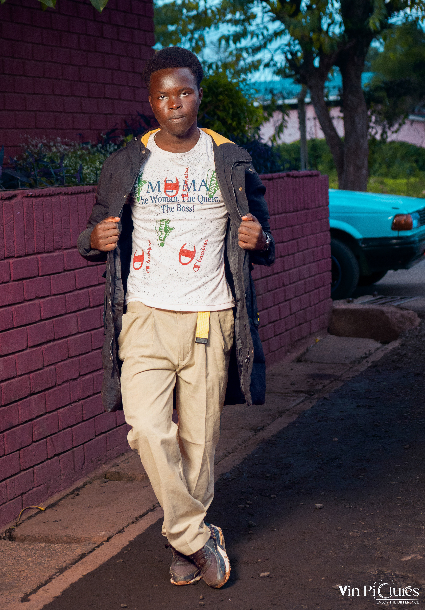
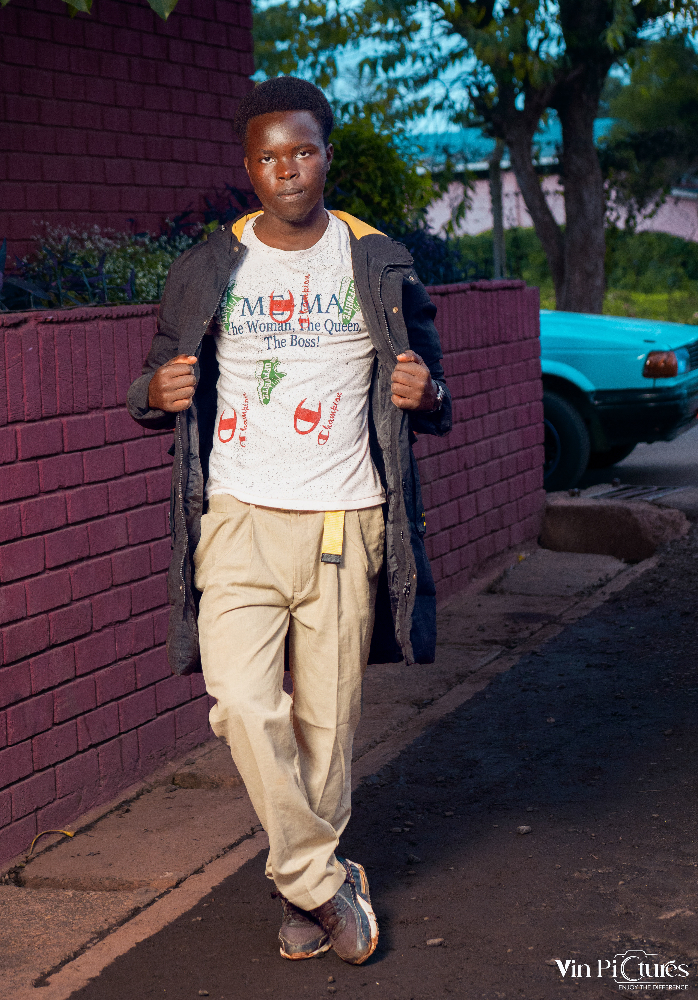

I am a web developer and a student at Murang'a University of Technology pursuing a Bachelor of Science in Actuarial Science degree.
I have a passion for creating creative and functional websites that provide an excellent user experience.
In my free time, I enjoy coding, programming, and learning about the latest trends in web development.
Feel free to explore my portfolio to see some of the projects I've worked on!
I am also open to collaborations and freelance opportunities, so don't hesitate to reach out if you'd like to work together.
I look forward to connecting with you!
Apart from web development, I have a keen interest in data analysis and statistical modeling, which aligns with my academic background in Actuarial Science.
I believe that combining my skills in web development with my knowledge of data analysis can lead to innovative solutions and insights.
Thank you for taking the time to learn more about me.
I also enjoy hiking, photography, and exploring new technologies.
I am always eager to take on new challenges and expand my skill set.
Please feel free to reach out to me for any inquiries or collaborations.
I also design posters and logos for small businesses and personal projects.
For more information, you can visit the services page on this website or contact me directly.
Thank you for visiting my personal website!